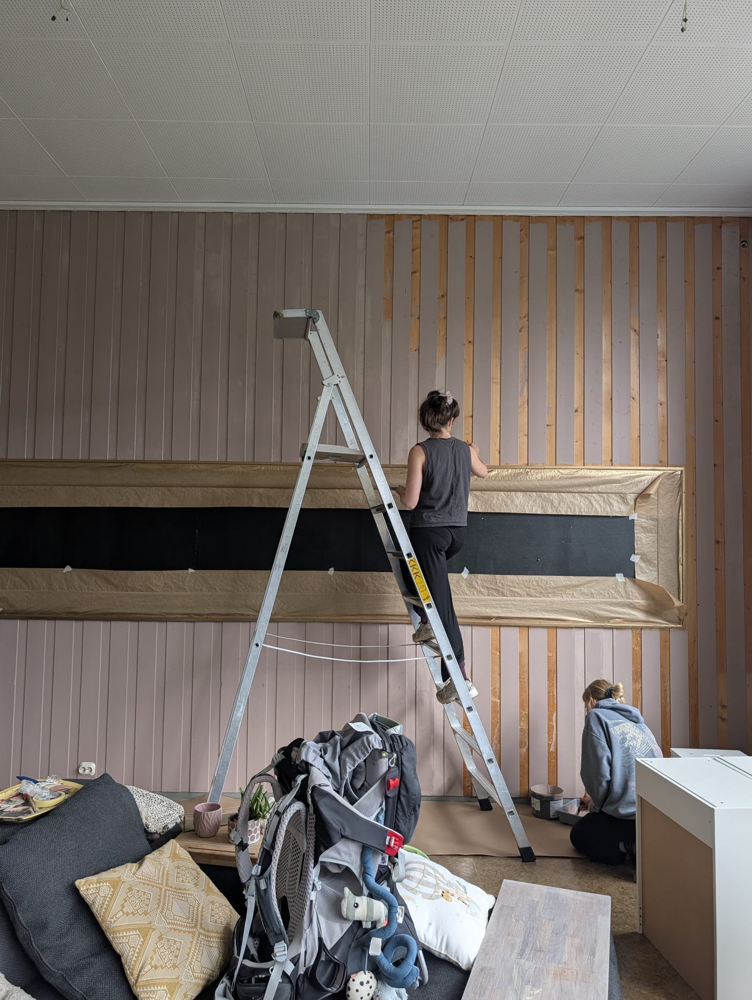
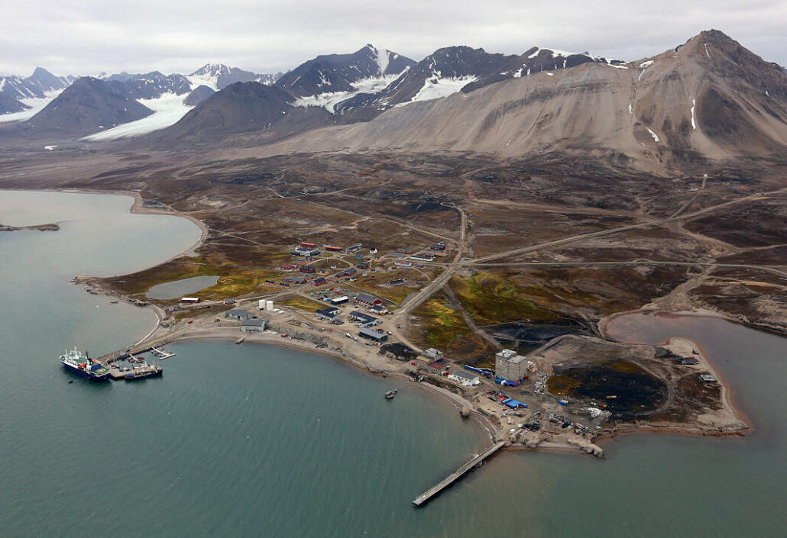
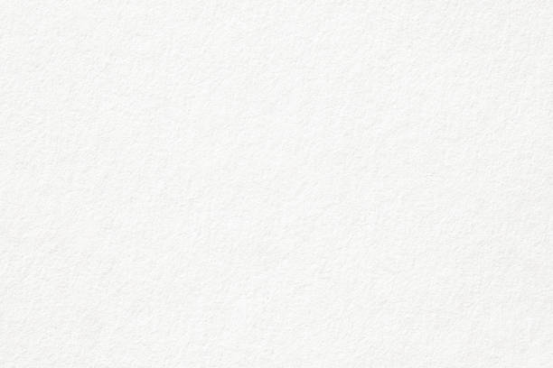
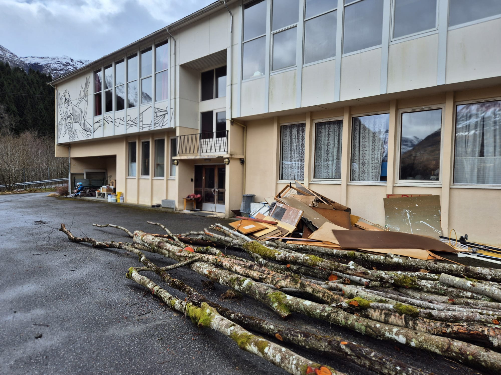
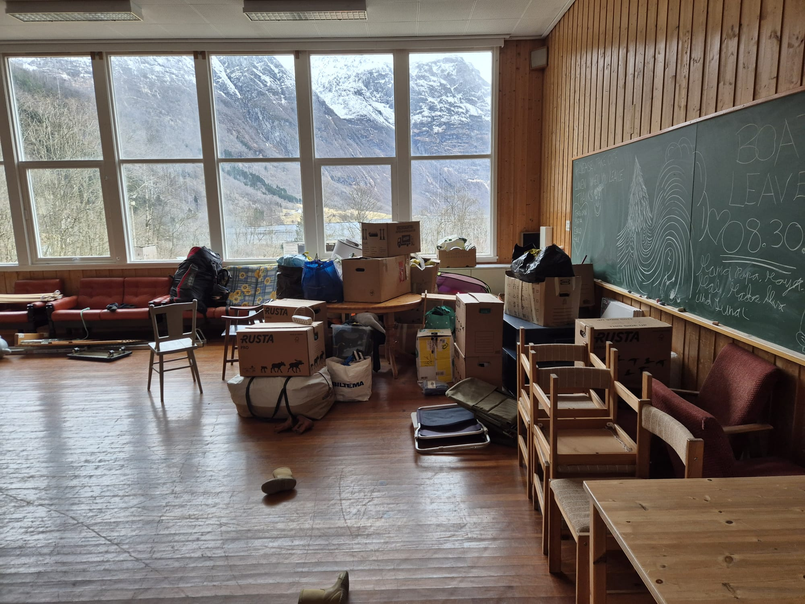
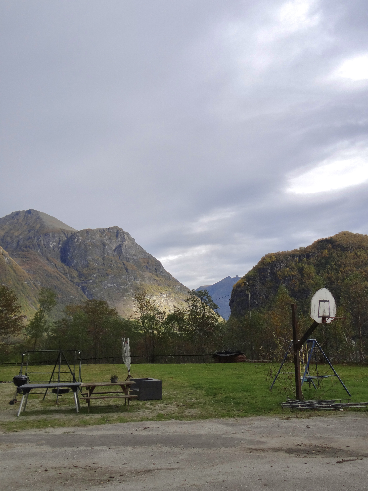
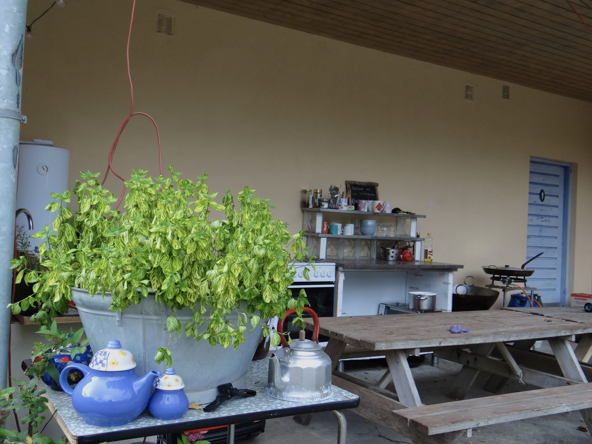
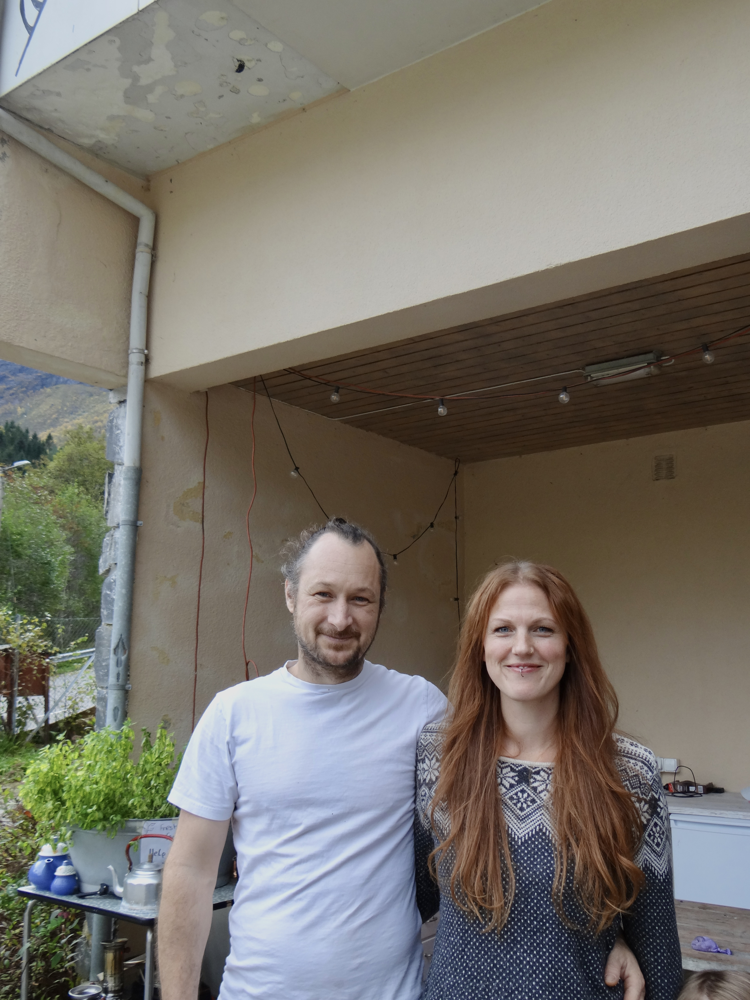

Bjørneskulen wasn't used for education for 13 years. All that time the school was owned by someone who had no use for it.


You are probably thinking about teachers, students and an old dusty smell right now Here at Bjørneskulen you won't find that anymore. But something extraurdanry instead


Bjørneskulen wasn't used for education for 13 years. All that time the school was owned by someone who had no use for it.

Therefore it was still filled with old things and all kinds of school-related items.

The idea to buy the school was made a while ago. Preparations and administrative measures had already been undertaken in spring 2025 to make the purchase of the school possible. However the process proved to be more difficult and costly than expected. In order to use the school for guests, various modifications to the wastewater system had to be carried out, and a change of use permit had to be obtained. Thanks to good cooperation with the municipality and the local community, the project was able to go on in spring 2026.
On the ground floor there are now two guest apartments. The smaller one fits 2-3 people, and the other one fits 6 people easily. On the first floor you find the owners' apartment.


In the yard you can find a hangout area, an equipped outdoor kitchen as well as a green place. Everybody is very welcome to use it and spend time there.
- Together with their 4 children, the couple Alex & Rieke brought the sports back to Bjørkestølen. - Both of them grew up in Germany, where they met. But Norway has separated both of them. Rieke came here to work on a goat farm. Alex got to Norway since his father took over a camping site from a friend. For many years they were commuting between Germany and Norway. In 2018/2022, they took over Alex' father's camping place nearby, so both of them already have experience what it takes to host guests. This was sold in 2024, which led them to Bjørkestølen. - "We were travelling through Europe for 2.5 years with our camper and at some point we wanted to come back to Norway." – Alex - "We liked the idea of having a project that demands creativity." – Rieke - Since July 2026, it's now possible to stay in Bjørkestølen. Until the end of this year's guest season is shown of the small apartment, the only project that needs to be finished. - "We are very proud of the process we made with the school and are looking forward for the upcoming years."
